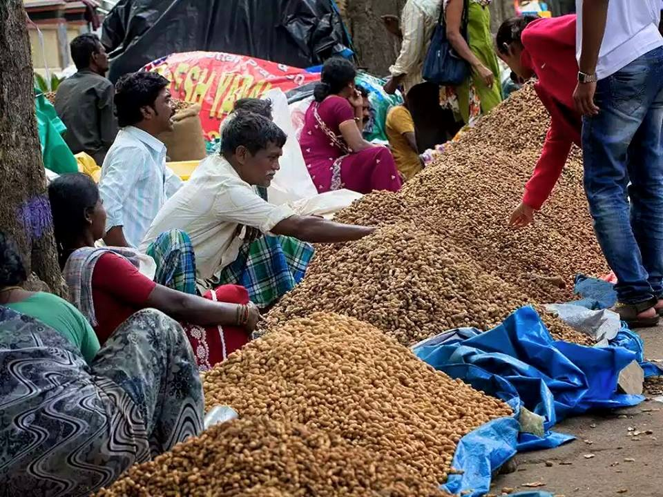
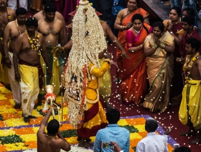

COME EXPLORE THE FESTIVALS OF BANGALORE
Rightly known as the ‘land of festivals’ and renowned for its diversity, India is an amalgamation of tradition and modernity in every aspect. Everyday in the country you have one or the other thing to celebrate about. It is said that there’s no better way to enjoy a place more than experiencing its local festivities and celebrations.
Bangalore, one of the most glorious city of the country, has a rich blend of cultural and economic centres. More than the IT hub, the city is quite famous for its festivals and fairs that bring ahead the conventional sphere of modernity without detaching from the roots of tradition.


Ugadi
Believed to be an auspicious day to start all the things, Ugadi or the Kannada New year involves day-long festivities. Also celebrated as Gudi Padwa, it marks the celebration of a new era or new year. Just like Diwali, the houses are cleaned and then decorated with mango leaves, flowers and rangoli designs. The day is toasted with a great feast that includes traditional kannada dishes.
Kadalekai Parishe
Kadalekai Parishe, meaning groundnut fair, celebrated on the occasion of the harvest of the first production of groundnut crop. This annual event witnesses a huge number of vendors from all over south India who come to trade huge stacks of groundnuts. Dedicated to Lord Basava, this 2 days fair has a variety of stalls selling toys, bangles, objects made of clay. It is a sight to watch when thousands of lamps are lit in the Bull Temple for the revelry.
Karaga
Celebrated in the month of March or April, Karaga is one of the foremost festivals in Bangalore. Just like Navarate is celebrated in north India, in the similar way Karaga is performed in Bangalore for 9 days in honour of Goddess Shakti.